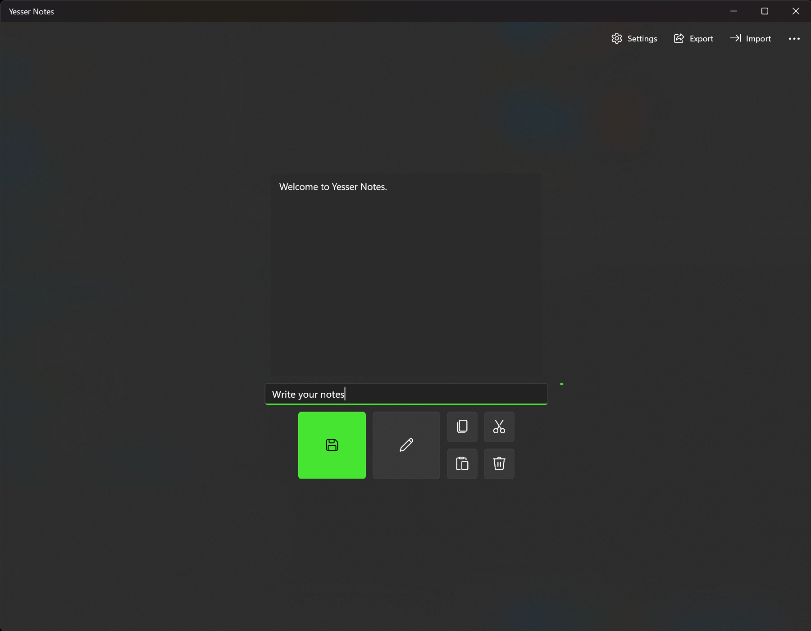
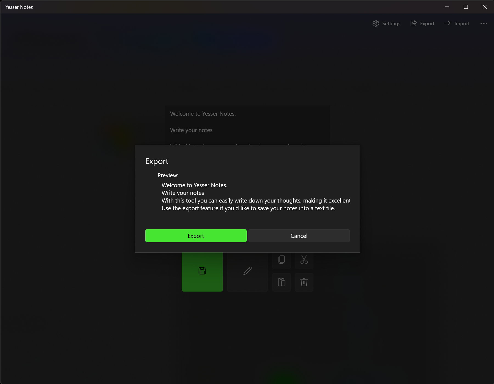

The lightweight notes app for your short note-taking needs, made by Yesser Studios.
Take short text notes
Yesser Notes is the ultimate note-taking app with intuitive features and a simple interface.
It gives you the confidence to express your thoughts like never before, making you more productive and organized.

Export your notes into a text file
Yesser Notes lets you export your notes into a text file, to share them or upload them.
It can also import notes from a text file.

Available on all supported Microsoft operating systems
Yesser Notes is available on the Microsoft Store for Windows 10/11, Xbox consoles, Surface Hub and HoloLens.